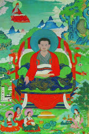

Марпа Лоцзава (по-тибетски Марпа переводчик) родился в 1012 году нашей эры в Чукьере округа Лходрак, южная часть провинции Цанг. В шестнадцать лет Марпа решился на путешествие с целью приступить к познанию редких учений тантры, его первое путешествие было сначала в Непал, а за тем в Индию, так начался путь великого Марпы переводчика, который продлился всю жизнь. Марпа известен как лама мирянин, который принёс из Индии в Тибет многие элементы буддийского учения Ваджраяны, включая Махамудру, в следствии чего была основана линия Кагью.
Марпа один из авторитетнейших переводчиков и учителей Тибета. Самыми известными и лучшими его учениками были: Нгоктён Чёдор, Миларепа, Метён Ценпо и Цуртён Ванг-нге.